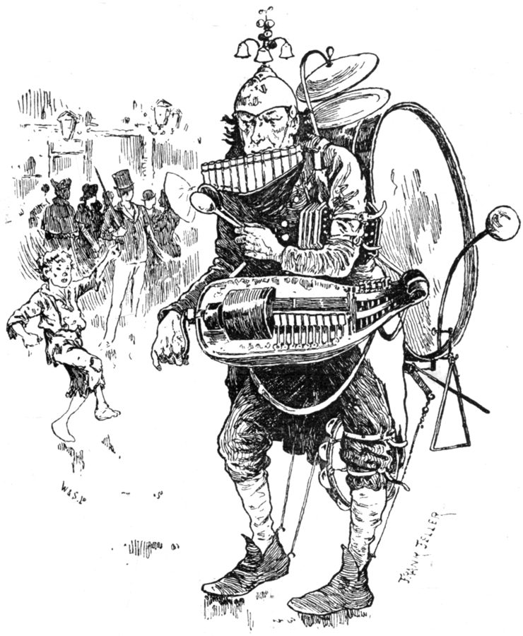
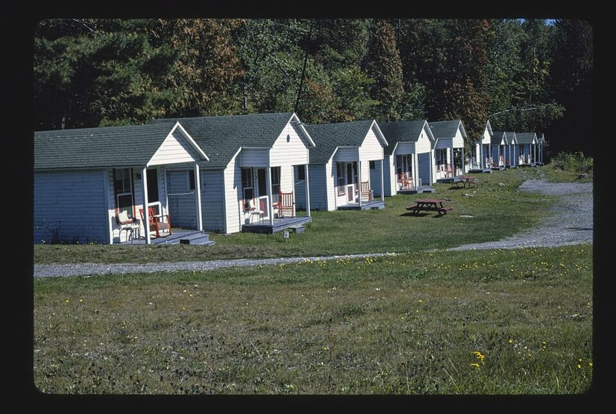
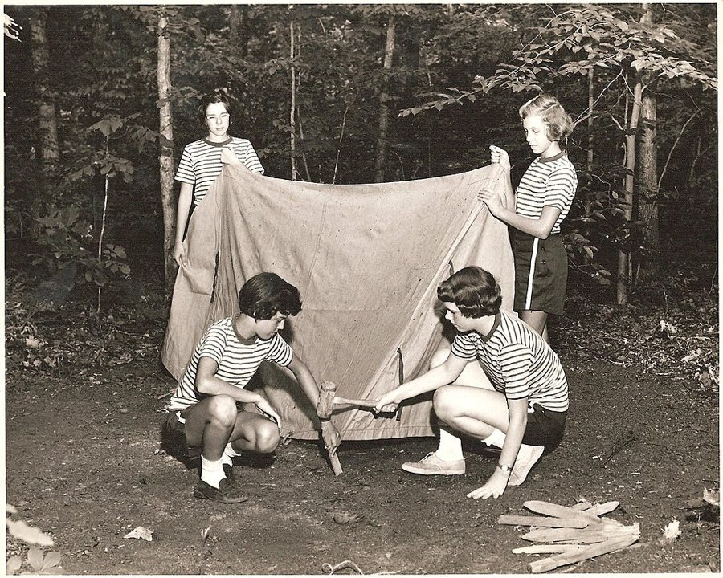
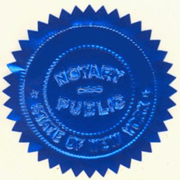
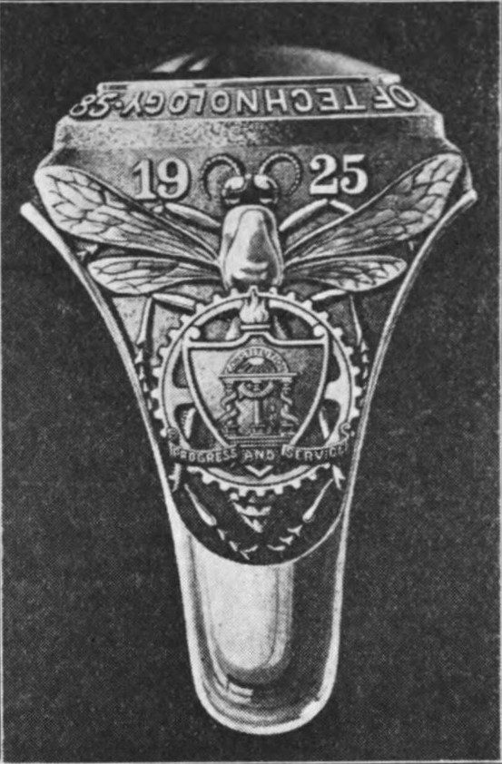

这一章在做什么
收线的一章。开场是 Dan 飞回洛杉矶的第二天傍晚，1970 年 12 月 3 日：第 1 到 4 章里你已经跟着另一个 Dan 过了一遍的那个晚上。前两个场景几乎没有对话，他在摸黑干活；中间一大半是山里一张野餐桌边的长谈，句子短，难词集中在一张纸上的法律用语；最后回城，节奏很快。
英语不难，难在对账：前面留下的几处没头没尾的小事，这一章从另一面再走一遍。手边翻开第 2、4 章。抓两样：他每一步在赶什么钟点；他对一个十一岁的孩子哪些话说了实情，哪些没说。
洛杉矶以东的 San Bernardino 山，谷底是 Big Bear 一带的湖。这一章有一半的篇幅在这片松林里。
照片：jcookfisher，CC BY 2.0，维基共享资源（2006 年摄，与本书无关）
人物
都是虚构的人。只写到上一章结束时你已经知道的。
Dan Davis 叙述者「我」 冷眠醒来半年后，激 Twitchell 按下按钮，退回 1970 年 5 月。在丹佛闷头干了七个月，把两台新机器和一家新公司托给 John Sutton，12 月 2 日夜里飞回洛杉矶。上一章他说过两件事：现在不能沾酒；急着回自己的那个年代。
另一个 Dan 「第一遍」的他，没有台词 第 1 到 4 章里的那个 Dan。12 月 3 日这天他签了冷眠合同，路上给 Ricky 寄了信，晚上去 Miles 家摊牌。
Pete Dan 的猫 第 4 章那一夜在 Miles 家以一敌二，然后从纱门冲进夜里。Dan 醒来后一直认定它流落街头，早死了。
Miles Gentry 和 Belle 只闻其声 Dan 从前的合伙人和未婚妻，这时已是夫妻，12 月 3 日夜里在 Miles 家的客厅。第 7 章 Belle 说过：Miles 在这之后不到两年就死了。
Ricky Frederica Virginia Miles 的继女，十一岁，从六岁起认识 Dan，叫他 Uncle Danny。第 2 章说过她这几天在 Big Bear 的女童军营地。Dan 醒来后找了她半年，第 9 章线索停在 Yuma 的一本登记簿上。
Ricky 的 grandmother 只提到，没出场 第 7 章 Belle 说 Ricky 后来跟她过，姓什么记不清；第 9 章 Dan 查到她们住在 Brawley。到上一章为止，书里没说是祖母还是外祖母。
营地办公室的女人新 没有名字 穿制服的成年女童军，守着营地的规矩。Dan 没问她的名字，给她起了两个外号。
汽车旅馆老板新 没有名字 只有两三句话。
Mr. Powell 保险公司推销员 第 1 章 Mutual Assurance 的那位 Our Mr. Powell。
体检医生 没有名字 第 1 章骂过 Dan、叫他滴酒不沾、第二天中午再来的那位。
场景地图
这一章原书用空行分成 3 节，本站再按场景细分成 8 段。粗体是每个场景开头的几个词，照着它在书里找位置；读完一个场景回来打个勾。
THE FOLLOWING EVENING, 3 December …约 400 词 Miles 家外面的街上和后巷，天已经黑了。全是叙述。留意他在等什么、带着什么工具。 I had promised myself that …约 650 词 后院。屋里的事只能听。对照第 4 章读；中间有一段，他想到了屋里的那个人。 About three in the morning …约 600 词 山里的汽车旅馆，天亮后是营地办公室。一场磨嘴皮的对话，留意哪几句是实话。 I didn’t see Ricky come …约 1050 词 松树下的野餐桌。先是一段外貌描写，再是长对话。留意 Ricky 自己早就做了什么打算。 “Good.” I picked up the …约 800 词 还在桌边，话题转到一张纸上，法律词都在这里。留意他改了哪几个字，为什么改。 She did not touch it. …约 550 词 对话的后半，句子都很短。留意两个人各自要的是什么，还有一个日期、一个地名。 I HAD JUST ONE more …约 200 词 全章最短的一节，只有六段。留意他留下了哪两样东西，告别时纠正了哪个词。 IT WAS A QUARTER of …约 450 词 回城，一个上午赶三处。对话很冲。留意几个钟点、一个日期，和加了引号的 yesterday。
背景：作者默认你知道的事
这些都是真实世界里的东西。按在书里出现的顺序排。
场景 1 老式轿车的车尾：trunk、turtleback、tire irontrunk 是后备箱（英国人叫 boot）。1930 到 50 年代的轿车，车尾是一个鼓起来的圆背，像龟壳，后备箱盖因此叫 turtleback 。
tire iron 是换轮胎用的撬棒，一头扁，随车带着。第 2 章 Dan 想砸工厂的窗户，手里掂量的也是它。
场景 1 one-man band
一个人的乐队。1892 年《海滨杂志》上的插图。
The Strand Magazine，1892，公有领域，维基共享资源 街头艺人的一种：背上背鼓，脚上拴镲，嘴里吹一样，手上再弹一样，全身没有一处闲着。busy as a one-man band 就是忙得手脚并用。这个比方在场景 1 的末尾。
场景 2 Big Bear、Arrowhead 和 Brawley
太平洋
墨西哥
洛杉矶
Miles 家
Mojave（工厂）
Riverside
约 90 公里
Arrowhead
Big Bear
山里，约 160 公里
Brawley
约 330 公里
Yuma
本站示意图，位置只是大概，公里数是从洛杉矶开车过去的大致路程。Miles 家在城西北的 San Fernando Valley（第 2 章）。Riverside、Brawley、Yuma 是第 8、9 章 Dan 追线索时到过的地方。
洛杉矶以东的 San Bernardino 山里有两个高山湖。Big Bear Lake 海拔两千米出头，夏令营和滑雪场都在那一带；往西几十公里是 Lake Arrowhead，湖边有度假旅馆。
Brawley 在另一个方向：东南三百多公里，靠近墨西哥边境，低于海平面的农业小城，很热。书里说 up from Brawley ，既是往北，也是上山。
场景 3 motor court
佛蒙特州的 Pinecrest Motor Court，1984 年。一间一间的小屋就是书里的 cabin。
John Margolies 摄，The Library of Congress，公有领域，维基共享资源（与本书无关） 汽车旅馆的前身。1920 到 50 年代的公路边，一排独立的小屋，车停在自己屋门口，老板住在路口那一间，半夜来了客人要把他叫起来。后来房间连成一长排，名字也换成了 motel（motor + hotel）。
场景 3 Girl Scouts 和营地里的军队词
1950 年代，女童军在林子里搭帐篷。
vastateparksstaff，CC BY 2.0，维基共享资源（与本书无关） 美国女童子军，1912 年成立，制服是绿色的，夏天在山里办营地。第 2 章说 Ricky 小时候是 Brownie，那是它的幼年组。
营地的作息有一半是从军营借来的：mail call 是集合发信；taps 是熄灯号，军营每晚最后一遍号声；办公室叫 Headquarters 。
场景 4 library lion
纽约公共图书馆门前的石狮，一对里的一头。
照片：Ken Thomas，公有领域，维基共享资源
纽约公共图书馆正门两侧各卧一头石狮，1911 年立的，纽约人给它们起了名字，叫 Patience 和 Fortitude。姿势是昂着头，两只前爪并排平伸。library lion 说的就是这个卧姿。
场景 5 notary public 和他的印
纽约州公证人的印记，压在一枚箔片上。书里的那一位是直接压在纸上的。
Alex756，公有领域，维基共享资源 公证人。在美国不是律师，是州里委任的普通人，银行职员、店主、秘书都可以兼。职责只有一件：看着你签字，确认你是你，然后自己签名，压上钢印（seal ）。钢印是一把小钳子，在纸上压出凸起的圆纹，动词是 emboss 。
场景 5 Bank of America 和小城里的分行加州的银行，1904 年在旧金山开张时叫 Bank of Italy，1930 年改成现在的名字。加州允许一家银行在全州开分行（当时美国不少州不许），它靠这个把分行开进了每个农业小城，1950 年代是全美最大的银行。
所以书里的人说「去某某城的分行」，不用问那里有没有。
场景 7 class ring
佐治亚理工学院的 class ring，Herff Jones 公司设计，戒面上的年份是 1925。书里只说 Tech，没说是哪一所学校。
作者不详，CC BY-SA 4.0，维基共享资源 美国大学和高中的毕业纪念戒指，又粗又沉，刻着校名、校徽和届别，男生戴的尤其大。毕了业的人常年戴着，算是随身的一张校友证。
书里的世界
这一章的 1970 年还是作者想象的那个 1970 年。新设定不多；多出来的是时间上的一层：这是 Dan 第二次过这一年的 12 月。下面两张图都只画到上一章结束。
第一遍
第二遍
冷眠 30 年
1970 年 12 月 4 日入睡
2000 年 12 月醒来
次年 5 月
Boulder 的实验室
退回 31 年零 3 周
这几天，世上有两个 Dan
5 月 3 日落在丹佛郊外
12 月 2 日夜，到洛杉矶
你读到这里
本站示意图，不按比例。上面一行是第 1 到 9 章，下面一行是第 10 章。竖虚线连着的两个点是同一个 12 月的头几天。
12 月 3 日下午（第 1 章）
酒吧；在 Mutual 签冷眠合同；体检，医生要他明天中午再来
傍晚（第 2 章）
进药店，把股票和一张转让书装进信封，寄给营地里的 Ricky
晚上（第 3 章）
到 Miles 家，车停在门前；吵翻，Belle 给他扎了一针
夜里（第 4 章）
Pete 大闹一场，从纱门冲出去；Miles 发现 Dan 的车不在门口
12 月 4 日下午（第 4 章）
合同被改成另一家公司的，人被送进 Sawtelle 的冷眠库
本站示意图。这一天半你已经读过，当时是从屋里看的。几个钟点记个大概：信寄出后约四十分钟邮差来取；医生约的是 4 日中午。
书里的说法 在书里是什么 真实世界里 Helicopter（送邮件的） 山里的早班邮件由直升机从洛杉矶送来，几点几分到，准得很。 洛杉矶 1947 年起确实有直升机邮路，把邮件从机场送到各区邮局楼顶。作者把它写成了 1970 年的寻常事。 helicopter bus 从山里的小镇到市中心的直升机班车，按钟点发车。 同一家公司 1950 年代也载客，但始终是少数人坐的短途航线，1970 年代初就停了。 cold sleep 是 comic-book theme 冷眠是小孩漫画里的常见题材。 现实里「一觉睡到未来」确是老题材：1929 年开始连载的漫画 Buck Rogers，主角就是睡了近五百年。 Central Valley 第 1 章见过：和 Mutual 同在一栋楼里的另一家保险公司，Dan 拿它压过价。 虚构的公司。名字取自加州中部的大谷地。 同一时刻有两个自己 上一章起的处境：Dan 在丹佛的七个月里，另一个他在 Mojave 上班。书里没有给这件事起名字。 科幻里的老问题。海因莱因自己 1941 年的短篇 By His Bootstraps 写的就是一个人和不同时刻的自己打交道。
这一章要用到的几笔旧账，都是前面交代过的：
Flexible Frank ：Dan 的万能家务机器人样机，装在电动轮椅底盘上，四百磅。第 7 章 Belle 说它被挪进了 Miles 的车库，Miles 还把笔记和图纸塞在它里面，后来连机器带纸一起不见了。纱门 ：第 4 章 Pete 是从一扇没搭钩的纱门冲出去的，Miles 和 Belle 互相埋怨是对方忘了搭。寄给 Ricky 的信 ：第 2 章，股票没有用背面的转让栏，是另写了一张纸，受益人写的是 Frederica Virginia Gentry。第 6 章银行回信说，从没有过这个名字的信托。Heinicke ：第 8 章会计的回信里，Dan 那批股票的红利付给了一个姓 Heinicke 的人名下的信托，后来股票卖给了 Cosmopolitan Insurance；同一章的报纸上，Riverside Sanctuary 刚唤醒一位 F. V. Heinicke。Mutual 的合同 ：第 1 章签的，一式四份，写明人和猫一起睡。第 4 章这些文件落到了 Belle 手里。
这一章的行话，先用中文过一遍
场景 4 到 7 的情节卡在几个法律概念上：一个孩子归谁管，一张股票怎么过户才算数，一份签名怎么才赖不掉。先把概念弄清。
继父不等于法律上的父亲：adopt 和 guardian
在美国，娶了孩子的母亲并不自动成为孩子法律上的父亲。要成为，得去法院办收养（adopt ）。没办的话，母亲去世以后，继父对孩子没有当然的监护权；谁是监护人（guardian ）由法院定，通常是血亲。
guardian of record 是「记录在案的监护人」：法院或官方文件上写着的那一位。孩子平时跟谁住、姓谁的姓，是另一回事。
股票过户：背面的转让栏，还是另写一张纸
转让人
银行 = 受托人
受益人（未成年）
assign … in trust for
reassign
现在就转
到约定年龄再转
受益人按法定姓名登记，平时用的别名不算数
过户的话写在哪儿：股票背面印好的转让栏，或者另外一张纸
本站示意图。第 2 章 Dan 在药店柜台上写的就是这个结构，当时选的是「另外一张纸」。
纸质股票（certificate ）的背面印着一栏空白表格，叫 assignment form ：填上转给谁、签名，这张股票就过户了。也可以不动背面，另写一张转让书夹在一起。
两种写法的差别，程序员一听就懂：一种是把元数据写进文件本身，一种是放在旁边的 sidecar 文件里。后者想反悔时撕掉就行，前者改不了；反过来，后者也最容易被别人抽走。
转给未成年人时通常不直接给，而是 in trust ：交给银行（受托人）代管，孩子是受益人，到了约定的年龄再 reassign 给本人。一份转让如果有法律上的毛病，叫 defective ，可能整个不作数。
让签名赖不掉：公证词的长短
公证人在签名下面写的那段话有固定格式。短的只说「某年某月某日，此人在我面前签了字」。书里说的 long form 多一层：公证人声明自己本人认识签字的人（known to me personally ）。多这一句，日后就很难说签名是冒的、人是假的。
英文 中文 一句话 adopt 收养 经法院办手续，成为孩子法律上的父母。 guardian of record 记录在案的监护人 官方文件上写明对孩子负责的那个人。 certificate （纸质）股票 第 1 章的 stock certificate，证明你持股的那张纸。 assignment / assign 转让 把一项财产或权利签字转给别人。第 2 章专利、股票用的都是这个词。 assignment form 转让栏 股票背面印好的空白表格。 in trust for 为……设立信托 交给受托人代管，好处归后面那个人。 reassign 再转让 受托人到期把东西转给受益人本人。 notary public 公证人 见上面「背景」。复数是 notaries public。 seal 印，钢印 不是海豹，也不是密封。 fee 手续费，酬金 付给专业人士的钱：公证、律师、医生都叫 fee。 will 遗嘱 名词。a court fight over a will 是为遗嘱打官司。 contest （对遗嘱）提出异议；争讼 法律上 contest a will 是主张遗嘱无效。日常义是「比赛、较量」。 estate 全部财产 第 1 章见过。handle my estate：代管我的财产。 committal 送入（冷眠）的批准手续 第 1 章说过入睡要法官许可。动词是 commit。 plus or minus one month 前后误差一个月 合同里给日期留的余地。 initial（动词） 签上姓名首字母 合同改了哪一处，双方就在哪一处旁边各签首字母，表示认可。
词与短语
词条按在书里出现的顺序排，按场景分组。斜体小字是它所在的那句话里的几个词，方便你在书里找到。
场景 1 THE FOLLOWING EVENING, 3 December …
drop me a block from
… a cabdriver drop me a block from …
让我在离……一个街区的地方下车
drop 是让乘客下车。block 是两条横街之间的一段，一百来米。have + 人 + 动词原形：叫某人做。
comfortably early
… Miles’ house comfortably early, as I …
早到不少，时间宽裕
comfortably 说的是余量够，不是舒服。
the first time
… arrived there the first time. It was …
头一遍（过这个晚上的时候）
指第 3 章。这一章里凡是 the first time、my original，都是说另一个 Dan 做过的事。
back off
… so I backed off a hundred yards …
往后退开
一百码约九十米。
two cigarettes later
Two cigarettes later I saw another …
抽完两支烟的工夫
拿烟当钟用。第 5 章他醒来时闻到烟味发晕，回到 1970 年又抽上了。
pull up
… another car pull up there, stop, …
（车）开过来停下
不是「往上拉」。
no hurdle
… but that was no hurdle; I …
算不上障碍
hurdle 是跨栏的栏架。
ears-deep in
… always getting ears-deep in an engineering …
整个人陷在……里
淹到耳朵。常见的说法是 up to one’s ears in。
a spare ditched in the trunk
… keeping a spare ditched in the trunk. …
在后备箱里藏一把备用钥匙
spare 是备用件，这里是钥匙。ditch 本义是丢弃，这里是随手塞在某处。
on a slight grade
… parked on a slight grade heading downhill, …
停在一段缓坡上
grade 是坡度，不是年级、分数。
let it drift
… I let it drift to the corner …
不发动，让车自己溜下去
drift 是顺势漂、滑。
back of
… in the alley back of Miles’ house …
在……后面
美国口语，等于 behind。alley 是房子背后走车、收垃圾的小巷，车库朝它开门。
armed with a tire iron and determination
… armed with a tire iron and determination—not …
手持撬棒，外加一股决心
一个动词带一实一虚两个宾语，是英语里常见的俏皮写法。破折号后面半句是 Dan 在挖苦当地的车库门不结实。
tackle
… car, then tackled Frank himself. Nobody …
动手对付
本义是橄榄球里的擒抱。tackle a problem 是着手解决。
busy as a one-man band
… as busy as a one-man band for …
忙得手脚并用
见上面「背景」。
turtleback
… lowered the turtleback down on it …
后备箱盖
见上面「背景」。
as far as it would go
… as far as it would go when …
能压多低就压多低
would 表示「肯」：盖子不肯再往下了，也就是没关严。
swear to myself
… Swearing to myself at the time …
在心里骂
swear 这里是骂脏话，不是发誓。at 后面是骂的对象：花掉的时间。
场景 2 I had promised myself that …
relish
… I would relish every second of …
细细享受
场景 4 还有一处 hadn’t relished，是「并不乐意」。
accommodate
… they never accommodated me by coming …
给我行个方便
不是「提供住宿」。Dan 的反话：他们打架也不肯挪到我看得见的地方。
theater of vision
… into my theater of vision. So …
视野
仿军语 theater of war（战区）造的。平常说 field of vision。和下一句的 carnage（大屠杀）是一套词：他把这当战报写。
hooked
The damned thing was hooked! It …
（纱门）搭着钩
纱门里侧有个小钩子。the damned thing 指门。
follow the schedule
… had failed to follow the schedule. So …
照着「时刻表」走
这张时刻表是什么，想想他已经知道这一夜该发生哪些事。
stunt motorcyclist
… like a stunt motorcyclist hitting a fence. …
特技摩托车手
游艺场里骑摩托撞穿木板墙的表演。
in their spot
… have risked it in their spot. But …
换了我处在他们的位置
spot 是处境。口语里也说 in a tight spot。
just a case of
… it was just a case of waiting …
剩下的只是……的事
第 1 章讲过 case 的两个意思（病例、箱），这是第三个：情形。
sound his challenge
… and sounding his deep challenge, I …
发出挑战的吼声
sound 作动词：使……响，如 sound the alarm。challenge 是叫阵。
Easy, boy
… here, Pete. Easy, boy, it’s all …
别急，乖
安抚马、狗的话。easy 是「慢点、放松」。
head-bump
… no time to head-bump with Papa. But …
（猫）拿头顶人、蹭人
猫表示亲热的动作。Papa 是 Dan 自称。
leaving me in the living room
… leaving me in the living room. I …
把「我」留在客厅里
叙述者此刻蹲在院子里。这个 me 是谁，读到这里停一下。
such a final experiment
… suicide is such a final experiment, even …
一做就没法重来的实验
final 是「不可更改的」。工程师的冷幽默，见读后的句子讲解。
run into
… I might run into Miles—and I …
迎面撞见
want no truck with
… didn’t want any truck with a dead …
不想和……打任何交道
truck 在这个习语里是古义「交易、往来」，和卡车无关。
clean out the joint
… back and clean out the joint. You …
把那地方一锅端了
joint 是俚语里的「那地方」，第 1 章说酒吧时用过。这是 Dan 替猫翻译的话，用的是打手的口气。
hit ’em high, hit ’em low
… You hit ’em high, I’ll hit ’em …
你攻上三路，我攻下三路
美式橄榄球里两人夹击擒抱的说法。’em = them。
The show is over
… “No, boy. The show is over.” …
戏演完了，散了
hardware
… He sniffed the hardware on his accustomed …
一堆金属家伙
本义是五金、机件。电脑的「硬件」是后来的借用。
Quit being fussy
… I said. “Quit being fussy.” …
别挑三拣四了
quit doing：别再……。fussy 这一章出现三次，后两次说的是机构规矩多。
hit the street
… lights as we hit the street. Then …
一上大街
hit 是「到达」。hit the road 是上路。
storm drain
… drawings down a storm drain. The …
路边的雨水口
通下水道。
arroyo
… down a deep arroyo, making a …
干河沟
西班牙语，美国西南部通用。
场景 3 About three in the morning …
queer it
… cabin—Pete almost queered it by sticking …
差点把事情搅黄
1950 年代的俚语，queer 作动词是「搞砸」，如 queer the deal。现在不这么用了。
right on the dot
… in at seven-thirteen, right on the dot.” …
分秒不差
dot 是钟面上的刻度点。
give me a call
… “Fine. Give me a call at seven, …
到时候叫我起床
小屋里没有电话，是老板来敲门。
you’re better than I am
… around here you’re better than I am. …
那算你有本事
老板的意思：这地方早上吵得很，没人睡得到七点。
put you in the book
… But I’ll put you in the book.” …
给你记到本子上
the book 是登记叫早的本子。
look over
… I looked Pete over in daylight …
从头到脚检查一遍
不是「忽略」（那是 overlook，第 1 章）。
Uncle Sam’s truck
… the camp. Uncle Sam’s truck turned in …
邮政的车
Uncle Sam 是美国政府。邮局归联邦政府办，所以邮车是「山姆大叔的车」。
it was my day
… I decided that it was my day. …
今天我走运
decidedly no longer a girl
… who was decidedly no longer a girl. …
明摆着早就不是小姑娘了
decidedly：毫无疑问地。玩的是 Girl Scout 里的 girl。
properly suspicious
She was properly suspicious of me; strange …
对我起疑，这是应当的
properly 是「理所应当地」，Dan 赞成她的警惕。
counter with
… She countered with the statement that …
拿……顶回来
counter 作动词：还击。不是柜台。
visit with
… don’t want to visit with Frederica, but …
和……坐下来聊
美国说法。visit with 是闲谈做客；对方刚说的 visitors、visiting hours 是探视。Dan 借同一个词把自己摘出去。
not free to tell
… I am not free to tell anyone …
不便告诉
free 是「可以自行决定」。
the crook of my arm
… in the crook of my left arm …
臂弯
第 2 章 Dan 说过要教 Belle 怎么抱猫，没教成。抱法在这里。
tabby
… I have a tabby at home who …
虎斑猫
litter 是一窝崽。她是说：我家那只像是它同胞。
indecently pleased
… eyes and looking indecently pleased. He …
舒服得不成体统
indecently：有失体面地。
take a stiff line with
… taking a very stiff line with strangers …
对……摆出强硬态度
line 是「立场、路线」。第 9 章那位年轻医生对 Dan 用的也是这个说法。
overtures
… does not fancy their overtures. …
主动示好
本义是歌剧的序曲。fancy 作动词是「看得上」，英国味的说法。
the guardian of youth
The guardian of youth told me to …
这位「青少年的守护者」
Dan 给她起的外号，文绉绉的。
场景 4 I didn’t see Ricky come …
cat protocols
… few seconds while exchanging cat protocols. Then …
猫的见面礼数
protocol 是外交礼节。第 2 章 Dan 说过猫的礼节比外交还严。程序员用的「协议」是同一个词的引申。
soberly
… looked up and said soberly, “Uncle Danny, …
郑重地
和喝没喝酒无关。sober 的两个意思这一章都用到了，另一个在场景 8。
awful glad
… “Uncle Danny, I’m awful glad you’re here.” …
高兴得不得了
awful 当副词用，等于 very，孩子和口语的说法。
paw
… never been one to paw children and …
对……又搂又摸
名词是爪子。never been one to：从来不是那种会……的人。
fill out
… fast, not yet filled out, she was …
（身体）长开，长丰满
不是「填表」。
add up to
… did not add up to feminine glamour. …
加起来算不上
把短裤、晒脱的皮、泥巴当成一列数字来加。
matchstick sketch
… was a matchstick sketch of the woman …
火柴棍画出来的草图
制图员的比方：只有几根线，成品还没画。
coltish gawkiness relieved by
… her coltish gawkiness relieved only by …
小马驹似的笨手笨脚，只靠……才显得不那么突兀
colt 是小公马。relieve 这里是「调剂、冲淡」，不是「解除」。
mail call
… me away from mail call; I haven’t …
集合发信
见上面「背景」。
ponderosas
… picnic table under the ponderosas and I …
西黄松
美国西部山区最常见的大松树。第 8 章 Chuck 说的 western yellow pine 是同一种树。
make a library lion of himself
… making a library lion of himself with …
摆出图书馆石狮的卧姿
见上面「背景」。make a … of oneself：把自己弄成……的样子。
break that to her
… hadn’t relished having to break that to …
把这个（坏）消息告诉她
break the news to：开口说出难说的事。
how can you help going back
… But how can you help going back? …
你怎么能不回去呢
can’t help doing：没法不做。help 这里是「避免」。
drive up from
… She has to drive up from Brawley. …
从……开车上来
up 是往北，也是上山。见「背景」里的地图。
put contempt into one pronoun
… more contempt into one pronoun than …
把轻蔑全压在一个代词上
书里用斜体印的那个 her。这一章 Ricky 始终不肯说那个人的名字。profanity 是脏话。
make it stick
… your grandmother can make it stick if …
让这事站得住、不被推翻
stick 是「粘牢」。说指控、判决、主张能成立。
take you for a ride
… wants to take you for a ride—then …
带你坐车兜一圈
这里是字面意思。这个短语在俚语里另有一义：骗人；黑帮片里是「拉出去干掉」。
wistful
… not.” But she looked wistful. “I’ve got …
舍不得的，怅怅的
abandon your baggage
… you just must abandon your baggage? You …
把行李丢下不要
第 5 章 Dan 记起父亲的话：聪明人要随时准备丢下行李。
before taps
… have you back before taps. Then …
熄灯号之前
见上面「背景」。和水龙头、轻敲都无关。
fib
… your grandmother tell that fib for you?” …
小谎
比 lie 轻得多，孩子气的词。下一段的 little white fibs 是「善意的小谎」，通常说 white lie。
used, not abused
… meant to be used, not abused.” …
可以用，不可以滥用
老太太的格言，靠 use 和 abuse 押韵。
sensible
“She sounds like a sensible person. …
明事理的
不是「敏感的」（那是 sensitive）。
场景 5 “Good.” I picked up the …
would not do
… and a lie would not do. …
不行，不合适
do 是「行、够用」。That will do：这就行了。
woebegone
… and looked more woebegone than ever. …
愁眉苦脸的
woe 是悲苦。
ever so much better
… would be ever so much better. Grandma …
好上不知多少
ever so 是老派的加强语气，女孩子常用。
nothing like
… there’s nothing like having a man …
什么都比不上
不是「一点也不像」。
tease
… to. Please don’t tease me.” I …
别再缠我、求我了
不是「取笑」。tease 的旧义是磨人、反复央求，美国口语里还留着。
mollified
Ricky seemed slightly mollified. “You know, …
气消了些
I had an awful outrage
… I had an awful outrage.” …
我当时气坏了
大人不这么说（会说 I was outraged）。孩子把一个大词当成像 a fit 那样的东西来用。
through with
… I’m through with her, forever and …
和……彻底了断
through 是「完了」。
cross my heart
… and forever and cross my heart. Now …
我发誓
孩子起誓的话，全句是 cross my heart and hope to die。Dan 在用 Ricky 的语言。
not yet out of the woods
… were not yet out of the woods. I …
还没脱险
word it
… plan how to word it in the …
措辞，怎么写
word 作动词。
defective
… might have been defective in any case. …
（法律上）有瑕疵、不作数
见上面的行话。in any case：不管怎样。
watchdog
… then noticed our watchdog sticking her head …
看门狗
给营地那位女士的第二个外号。
run out of minutes
… I was running out of minutes. …
时间快用光了
平常说 run out of time。他是按分钟在算。
nailed down tight
But I wanted it nailed down tight. …
钉死，办得毫无漏洞
stretch a point
… she even stretched a point (on Ricky’s …
破例通融
把规矩拉宽一点。
fraternity of cat people
… of the fraternity of cat people) and …
爱猫人这个「兄弟会」
fraternity 是美国大学里的兄弟会，引申为同道中人。cat people 第 2 章见过。
said Daniel B. Davis
… personally as being said Daniel B. Davis—” …
上述的 Daniel B. Davis
法律文书里 said 放在名词前，是「前面提到的那个」。
Just let Belle try
… Just let Belle try to find …
让 Belle 来试试看
Just let + 人 + try：叫板的口气。twist 是曲解、做手脚。
场景 6 She did not touch it. …
quite a bit
“Quite a bit. It will be …
不少
不是「一点点」。
just as easily
… you could just as easily bring Pete …
明明一样可以
带埋怨的口气：另一条路又不难。
make a date
… But we’ll have to make a date. …
定下一个日子
第 7 章开头同一个短语，说的是和 Belle 约见面。
leave word
… you’ll have to leave word for that, …
事先留话交代
word 是「口信、吩咐」，不加冠词。
show up
… whether you show up or not.” …
到场，露面
have her convinced
… that I had her convinced but …
已经把她说服了
have + 人 + 过去分词：使某人处于某种状态。
presently
… at them, then presently said, “Danny?” …
过了一会儿
这本书里 presently 都是「不久之后」，不是「目前」。
my ears roared
My ears roared and the lights flickered. …
耳朵里轰的一声
第 8 章结尾他在电话里听到那个名字时，用的是同一句。
场景 7 I HAD JUST ONE more …
in the event of
… Be Opened in the Event of the …
一旦发生……
文书用语，等于 if … happens。event 不是「活动」。
varied career, matrimonial and otherwise
… Belle’s varied career, matrimonial and otherwise. In …
多姿多彩的履历，婚姻方面的和别的方面的
把劣迹说成 career，是反话。内容见第 10 章侦探社的报告。
no contest at all
… over his will no contest at all. …
根本不用打（一边倒）
双关：contest 既是「较量」，也是法律上对遗嘱提出的异议。见行话表。
better tell
“All right. Now better tell Pete good-bye, …
该跟……说了
口语里省掉了 you had。
look me in the eye
… looked me steadily in the eye even …
直视着我的眼睛
clean streaks 是眼泪在脏脸上冲出来的干净道子。
so long
… ‘good-bye,’ Ricky. Just ‘so long.’ We’ll be …
回头见
不是「这么长」。美国口语的道别，意思是还会再见，比 good-bye 轻。
场景 8 IT WAS A QUARTER of …
a quarter of ten
IT WAS A QUARTER of ten …
九点四十五
美国说法，of 等于 to：差一刻十点。
be due to leave
… helicopter bus was due to leave for …
按时刻表该发车
due 是「到点、预定」。
used-car lot
… I sought out the only used-car lot …
二手车行
lot 是一块空场地，车就露天摆着。sought 是 seek 的过去式。
let my car go for
… letting my car go for half what …
以……的价钱脱手
go for + 价钱：卖到多少。
sneak Pete into
… just time to sneak Pete into the …
把 Pete 偷偷带上
sneak 及物。第 2 章说过他带猫进餐馆也是这么办。
lecture me over
… especially inclined to lecture me over having …
为……数落我
lecture 作动词是训话。inclined to：有意要。
can’t very well
… “I can’t very well ask the same …
总不好……
第 7 章结尾见过 could not very well object。
pass on
… same judge to pass on your committal …
对……作出裁定
不是「传下去」，也不是「去世」。法律用语。
most irregular
… twenty-four hours. It’s most irregular.” …
太不合规矩了
irregular 是公事人说的「不合常规」。most 等于 very。
convincing figures
… cash money with convincing figures on it. …
有说服力的数字（面额）
第 1 章讲过 figures 是数字。钞票上的数字最能说服人。
eat me out
… “Never mind eating me out about it, …
把我训一顿
二战美军的俚语，等于 chew out。接着那声 Sergeant 是顺着这个词来的：只有军士才这样训新兵。现在这个短语有粗俗的意思，别用。
want my business
… Do you want my business or don’t …
想不想做我这笔生意
business 是「光顾、买卖」。
beat it
… and I’ll beat it on up to …
抬腿就走
俚语。on up to 是「接着上楼去」。
fume
He still fumed but he gave in. …
憋着一肚子气
本义是冒烟。give in：让步。
the contracts read
… “The contracts ordinarily read ‘plus or minus …
合同上通常写的是
read 的主语是文字：上面写着。下一段 This one reads 同义。
allow for
… to allow for administrative hazards.” …
给……留出余地
administrative hazards：手续上可能出的岔子。
initial
… contract and we both initialed it. …
（在改动处）签上姓名首字母
见行话表。和「初始化」无关。
twelve straight up
At twelve straight up I was back …
十二点整
钟的两根针笔直朝上。
medical examiner
… check with their medical examiner. He …
（保险公司的）体检医生
在别处这个词常指法医。
sober as a judge
“Sober as a judge.”
一滴酒没沾
成语。sober 兼有「没醉」和「严肃」两义，法官两样都占。
That’s no recommendation
“That’s no recommendation. We’ll see.” He …
这可算不上什么保证
医生不买账：拿法官作比，并不说明什么。
you don’t know the half of it
“Doc, you don’t know the half of …
你知道的连一半都不到
成语：实情比你以为的离奇得多。
just as well as not
… even longer, just as well as not—but …
等不等都一样，没什么不可以
口语。might as well 是同一路说法。
anxious to
… I was frantically anxious to get back …
急着要
anxious to do 是「渴望」，不是「焦虑」。frantically：急得发狂。
值得停下来的句子
I wasn’t that curious and suicide is such a final experiment, even if the circumstances are mathematically intriguing.
— 场景 2，Dan 蹲在院子里。本站译：我的好奇心还没到那个地步；自杀这种实验做了就不能重来，哪怕这局面从数学上看很有意思。
前一句他想的是：溜进去，把客厅里那个动弹不得的自己杀掉，会怎样？屋里的人如果死了，三十年后就没有人醒来、回来、蹲在这里。
这是时间旅行故事里最有名的悖论，Dan 用三个词打发了它：experiment （把它当实验）、final （做了就不能重来）、mathematically intriguing （承认题目有意思）。口气是一个工程师决定不碰一台看不懂的机器。
下一段只有一句：他后来也一直没想明白。书在这里不给答案。
How do you explain to a child that there are times when you just must abandon your baggage?
— 场景 4。本站译：你怎么跟一个孩子讲明白：有些时候，行李就是得丢下？
abandon your baggage 是第 5 章的回声。那时 Dan 刚听说存款全没了，想起父亲的话：聪明人要随时准备丢下行李；他还自嘲不知要丢几回才算聪明。
Dan 自己丢过不止一回：睡过去时的全部家当，回 1970 年时带不走的积蓄；这一章末尾他还要把车半价卖掉。现在他要一个十一岁的孩子也丢，她舍不得的是一件新泳衣。
他没有硬劝，下一句就改了计划，让泳衣和毛巾可以带走。you just must 的 just 是「没有商量」的意思。
“Sober as a judge.” “That’s no recommendation. We’ll see.”
— 场景 8，Dan 和体检医生。本站译：「跟法官一样清醒。」「拿法官作保可不算数。查了再说。」
第 1 章这位医生骂人就不留情面，隔了一天还是那个脾气。sober as a judge 是现成的成语，医生偏按字面拆它：法官清不清醒，谁知道。
好笑的是后面：他查完说 Dan 比昨天好得多，好得惊人。对医生，中间隔了二十四小时。对 Dan，隔了三十年的冷眠，外加醒着的一年多，这一年多他几乎没碰酒。所以叙述里的 yesterday 加了引号，所以 Dan 回他那句 you don’t know the half of it 。
检查一下理解
先在心里答，再点开。答错的那题，回书里把对应的场景再读一遍。
1.（场景 1）停到 Miles 家门口的第二辆车是谁的？Dan 没有钥匙，怎么开走的？这回答了第 4 章的哪件事？
是他自己的车，另一个 Dan 刚开来、下车进了屋。后备箱里一向藏着一把备用钥匙；车停在下坡，他不开灯不点火让它溜到街角。第 4 章 Miles 出门发现 Dan 的车不在门口，转了六个街区也没找到，原因在这里。
2.（场景 1、2）第 7 章 Belle 一口咬定 Flexible Frank 是 Dan 拿走的，Dan 当时说不可能。谁说对了？东西最后在哪？
Belle 说对了，只是拿的是从未来回来的这个 Dan。他没有留着：零件沿路扔掉，笔记和图纸塞进雨水口，轮椅底盘推下山里的干河沟。这样 Miles 和 Belle 手里就什么都不剩了，第 7 章说 Mannix 那笔交易正是因此告吹。更好的设计他已经在丹佛重做过。
3.（场景 2）纱门上的钩子是谁打开的？他为什么说这是唯一没按时刻表走的一件事？
Dan 自己，从外面用小刀捅穿纱网挑开的，刚好赶在 Pete 撞上来之前。他记得 Pete 是从没搭钩的纱门冲出去的，就以为门本来开着；到了跟前才发现钩子搭着。第 4 章 Miles 和 Belle 互相指责对方忘了搭钩，两个人其实都没忘。
4.（场景 2）他说不想和 a dead man 打交道。Miles 这时明明活着，这话怎么讲？
对从三十年后回来的 Dan 来说，Miles 是早已死去的人：第 7 章 Belle 说他在这一夜之后不到两年就死了。Dan 看 1970 年的人，带着他们后来的结局。
5.（场景 3）Dan 对营地那位女士说的话里，哪些是实话，哪些不是？
名字是真的。「舅舅 / 叔叔」不是血亲，但 Ricky 确实这么叫他。「有关她家里、有关她母亲的急事」是打擦边球：Ricky 的生母早已去世，他指的是继母 Belle。「这是 Frederica 的猫，没人照看」半真半假。他没有编一个死讯，对方问是不是丧事，他答的是「不完全是」。
6.（场景 4）Dan 担心了几个月的是什么？为什么 Ricky 自己已经把它解决了？
他担心 Ricky 要在 Belle 手底下过上大约两年（他从 Belle 嘴里听说过 Miles 还能活多久）。Ricky 一知道 Miles 再婚，就写信给 grandmother 要求搬过去；对方回信说 Miles 从没办过收养，她才是记录在案的监护人，第二天就从 Brawley 开车来接。Dan 只补了一条：别说是离营，说是带出去兜风、游泳。
7.（场景 5）第 2 章那张转让书，Dan 为什么要撕掉重写？新的和旧的有哪三处不同？
旧的是单独一张纸，Belle 只要把它抽出来撕了，股票就成了无主的。新的写在股票背面的转让栏里；受益人从 Gentry 改成了她法律上的姓 Heinicke；还做了公证，用的是长式。Heinicke 是她生父的姓，也是 grandmother 的姓，可见那是祖母。他写到名字时后背发凉：旧的那张名字不对，可能本来就无效。这也说明了第 6 章银行为什么查不到 Gentry 名下的信托，第 8 章会计信里为什么是 Heinicke。
8.（场景 5）Ricky 说 I think she has something to do with this! Dan 答 Not exactly, anyway。他为什么不干脆说「没有」？
因为不全是假的。他这一趟要去冷眠，直接原因不是 Belle；可是往回追，他第一次被塞进冷眠库正是 Belle 干的。他不愿对 Ricky 撒谎，又没法解释，所以前面也说：真话没人信，假话不行。
9.（场景 6、8）书里给了两个醒来的日期，各是谁的？Powell 为什么不情愿？
Ricky 的是 the first day of May, 2001 ，在 Riverside Sanctuary，由 Cosmopolitan 经办；Dan 自己合同上写的是 27 April 2001 ，早四天。Powell 不情愿有两条：冷眠期比原来多出六个月；合同照例只写「前后一个月」，Dan 却要写死在某一天。Dan 让不得：误差一个月，他就可能赶不上她醒来的那天。
10.（场景 6）最后那一问一答之前，Dan 向 Ricky 提的办法是什么？提出「结婚」的是谁？
Dan 的办法只说到「再见面」：让股票的钱攒着，满二十一岁如果还想见他和 Pete，就去冷眠，他在她醒来那天等着；并且说明她来不来他都会在。结婚是 Ricky 先问出口的，声音很低；Dan 答应了，说这正是他想要的。第 2 章讲过，她六岁起两人就有一句「长大了嫁给你」的玩笑话，Dan 后来不再提，Ricky 没忘。场景 7 那枚 class ring 也有讲究：1950 年代的美国学生里，男生把它交给一个女孩，就是两人「定下来了」。
留给后面的问题
这些是这一章自己提出来、但没有回答的。带着它们往下读。
Dan 在院子里问过自己：要是进屋杀了那个「我」，会怎样？他说到现在也没想明白。书会不会回头说这件事？
他合同上的日期比 Ricky 的早四天。那一天他醒来时，世上会不会又有两个 Dan？
十年以后的事他管不了：Ricky 满二十一岁时，会怎么选？